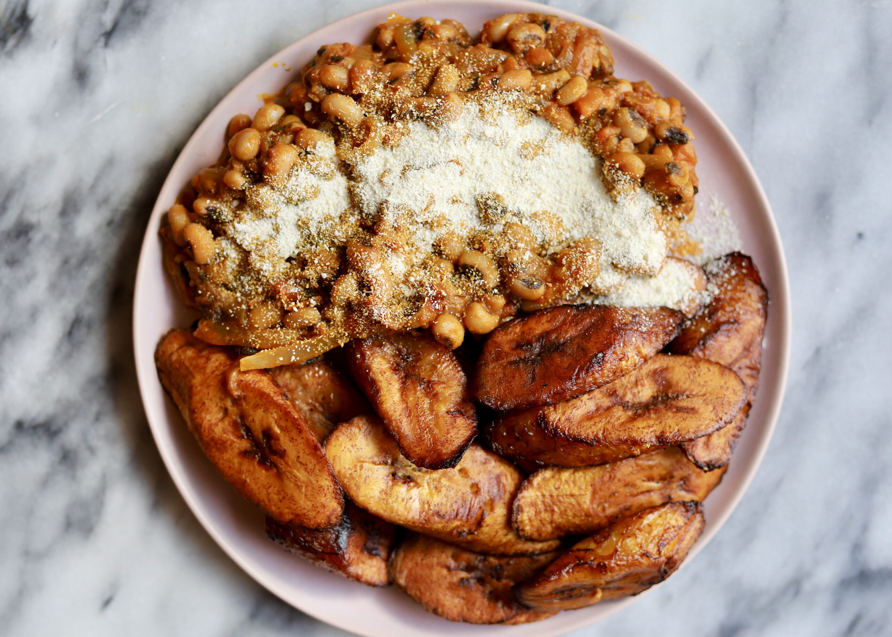

Back to home
Gari and Beans

Recipe for Gari and Beans
Hello there! Today I will be teaching you how to make gari and beans.
Ingredients
- Black eyed peas
- Palm oil
- Tomatoes (2)
- Onion (1)
- Powdered pepper
- Salt
- Ripe plantain
- Cooking oil
- Gari (Ground cassava)
Steps
- Soak 2 cups of black eyed peas in water overnight
- Filter water from black eyed peas
- Add 7 cups of water and 7 pinches of salt
- Cook until boiling and lower heat
- Cook until black eyed peas are soften (About 45 mins)
- Take black eyed peas of heat afterwards
- Slice up an onion and a tomato and fry in palm oil
- Add a table spoon of powdered chilli and stir until palm oil starts to darken
- Put off heat
- Slice up ripe plantains and fry using cooking oil until it turns brown
- Serve beans with gari, palm oil sauce and fried plantain
- Enjoy